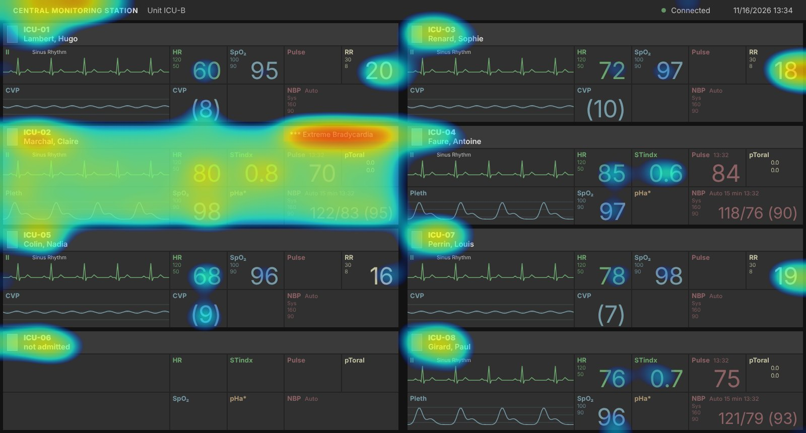
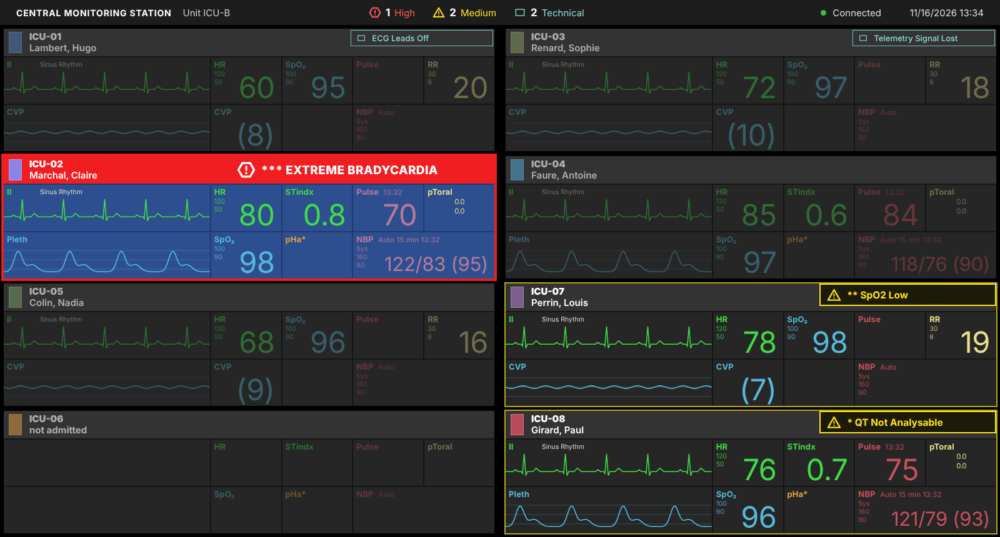

Le contexte
L’hôpital, un contexte où les alarmes sont omniprésentes
Selon une revue de 72 publications, 80 à 99 % des alarmes émises par les dispositifs médicaux à l’hôpital sont fausses ou sans conséquence pour le patient [1]. À force, les équipes s’y habituent et le risque de les ignorer augmente : c’est le phénomène dit de fatigue d’alarme.
Pour y remédier, on cherche le plus souvent à réduire le nombre d’alarmes. Nous avons regardé ce qu’un fabricant maîtrise directement : leur visibilité. Quand plusieurs alarmes s’affichent en même temps, la plus grave reste-t-elle la plus visible pour l’opérateur ?
Le problème
Plus il y a d’alarmes, moins on voit la plus grave

Avec une seule alarme, tout va bien. L’alarme vitale est la plus visible.
Avec quatre alarmes supplémentaires, elle perd 41 % de sa visibilité. Elle n’a pourtant pas changé, mais elle devient moins visible que les quatre autres.
Concrètement : quand plusieurs alarmes se déclenchent simultanément, l’interface n’oriente pas l’attention vers la plus urgente. À l’inverse, l’écran attire d’abord l’œil vers une alarme secondaire, non urgente, et seulement ensuite vers l’alarme vitale. En contexte réel, cela peut conduire à négliger une urgence vitale ou à retarder sa prise en charge.
La cause
Trois choix à l’origine de ce problème
- Le rouge est la couleur la plus sombreSur fond sombre, le jaune et le cyan ressortent davantage. La couleur qui veut dire « le plus grave » est celle qui se détache le moins.
- Toutes les alarmes ont la même formeMême taille, même place, même typographie. La gravité est codée uniquement par la couleur.
- L’écran ne s’adapte pasUne alarme ou cinq, l’affichage est le même. Rien ne fait le tri à la place du soignant.
La recherche en perception visuelle explique le résultat : un élément unique se repère d’un coup d’œil, mais dès que plusieurs se ressemblent, il faut les passer en revue un par un [2].
Notre méthode
Un audit fondé sur des normes et un modèle d’attention visuelle
- CadrerQuatre conditions, avec un nombre croissant d’alarmes à l’écran.
- Mesurer44 critères ergonomiques, et la visibilité de chaque alarme chiffrée par un modèle.
- AnalyserRésultat recoupé avec deux autres modèles.
- RecommanderRecommandations, redesign de l’interface, puis comparaison avant/après avec la même mesure.
L’interface a été évaluée avec des critères ergonomiques de référence [3, 4] et confrontée à deux normes internationales : l’IEC 62366-1, qui encadre l’aptitude à l’utilisation des dispositifs médicaux, et l’IEC 60073, qui fixe les règles de codage des couleurs et des signaux [5, 6].
La visibilité de chaque alarme est estimée par notre modèle d’attention visuelle. Il combine deux méthodes publiées : le résidu spectral, qui repère ce qui se détache par sa structure (un bord net, une forme isolée) [7], et le contraste colorimétrique global, qui repère ce qui se détache par sa couleur [8]. La couleur y pèse 60 %, parce qu’elle est le premier signal d’une alarme. Le calcul est déterministe : à image identique, mêmes valeurs. La méthode est rapide, peu coûteuse et applicable dès la maquette, avant tout test avec des utilisateurs.
La solution
Rendre l’urgence plus visible
Trois changements sur l’interface. Les éléments et leur disposition à l’écran restent identiques.
- La couleur pleine pour le danger vital, et lui seulLes alarmes moins graves passent en simple contour. Ce qui brille le plus est ce qui compte le plus.
- Une forme et une taille par niveau de gravitéUn pictogramme et un format propres à chaque niveau, lisibles même sans la couleur.
- Un écran qui fait le triDès que plusieurs alarmes sont actives, un décompte s’affiche et les patients stables passent en retrait.
Avant à gauche · Après à droite


Faites glisser le curseur. Patients, alarmes et situation identiques.
Le résultat
Avec notre redesign, l’alarme vitale passe de la moins visible à la plus visible
- Elle est 2,2 fois plus visible que sur l’écran d’origine, dans la même situation.
- Elle ne recule plus quand d’autres alarmes arrivent. La chute de 41 % a disparu.
- L’ordre de visibilité suit l’ordre de gravité : danger vital, puis gravité moyenne, puis alertes techniques.
Aucune information n’a été supprimée de l’écran, seule la façon d’afficher les alarmes a changé.
Pour votre produit
Ce que cette étude change pour vous
- Une interface critique se teste dans les scénarios les plus dégradés. Avec une seule alarme, l’alarme vitale est bien la plus visible. Le défaut n’apparaît que lorsque plusieurs alarmes arrivent en même temps, c’est-à-dire quand le risque est le plus grand.
- Un code couleur ne suffit pas à montrer ce qui est grave. La luminosité, la taille, la forme et le contexte comptent autant.
- Ce type de défaut se repère tôt, avant tout test avec des utilisateurs, sans mobiliser de soignants ni de matériel.
- Pour un dispositif médical, cet audit s’inscrit dans l’évaluation formative et alimente le dossier d’aptitude à l’utilisation.
Le principe dépasse le contexte médical : salle de supervision, cockpit, tableau de bord, application ou logiciel. Dès qu’un signal prioritaire doit ressortir d’une interface chargée, la méthode peut s’appliquer.
Et ensuite
Passer de la prédiction à la mesure
Cette étude prédit où le regard se pose à partir d’un modèle computationnel de l’attention visuelle. Elle ne remplace pas une étude avec des participants : l’étape suivante est de vérifier ces résultats par un protocole expérimental, sur le terrain.
- OculométrieMesurer le regard du soignant (fixations, saccades) face aux différentes versions de l’interface.
- PsychophysiologieCharge mentale, stress et réponse physiologique de l’opérateur face à l’interface.
- Recherche utilisateurAnalyse de la tâche, parcours cognitifs et entretiens avec des soignants.
Rapport complet accessible sur demande
Livrables de ce type d’audit : rapport d’auditgrille de 44 critèrescartes de visibilité avant/aprèsmaquettes du redesignmesures reproductiblesprotocole de la suite